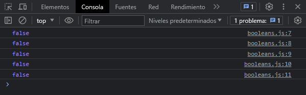
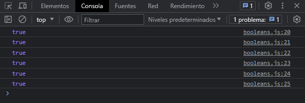

El objeto tiene un valor inicial de false. Si el valor se omite, o es un cero (0) o (-0), null, false, NaN, undefined, o una cadena vacía, también su valor sera false.
Creación de objetos Boolean con valor inicial false
Los valores booleanos se conforman por dos valores: true & false. Veamos como podemos crear un objeto Boolean con el valor inicial de false:
let sinParametro = new Boolean()
let conUnZero = new Boolean(0)
let conValorNull = new Boolean(null)
let conCadenaVacia = new Boolean("")
let conValorFalse = new Boolean(false)
Para saber el valor de un booleano cuando lo definimos con el constructor, usamos la notación del punto usando la función valueOf(). Veamos el ejemplo:
console.log(sinParametro.valueOf())
console.log(conUnZero.valueOf())
console.log(conValorNull.valueOf())
console.log(conCadenaVacia.valueOf())
console.log(conValorFalse.valueOf())
Veamos el resultado en la consola del navegador:
Creación de objetos Boolean con valor inicial true
Veamos como podemos crear objetos Boolean con el valor inicial de true:
let conValorTrue = new Boolean(true)
let conValorTrueString = new Boolean("true")
let conValorFalseString = new Boolean("false")
let conValorStringCualquiera = new Boolean("hola mundo")
let conValorArray = new Boolean([])
let conValorObject = new Boolean({})
Para saber el valor de un booleano cuando lo definimos con el constructor, usamos la notación del punto usando la función valueOf(). Veamos el ejemplo:
console.log(conValorTrue.valueOf())
console.log(conValorTrueString.valueOf())
console.log(conValorFalseString.valueOf())
console.log(conValorStringCualquiera.valueOf())
console.log(conValorArray.valueOf())
console.log(conValorObject.valueOf())
Veamos el resultado en la consola del navegador:
Conclusion
Un objeto booleano, siempre sus valores serán true o false. Según los ejemplos de arriba, una cadena de texto siempre sera true aunque en su texto lleve la palabra "false". Independientemente de cualquier nombre que tenga en la cadena de texto su valor sera true. Para definir como valor booleano debemos indicar el valor sin comillas con true o false a secas.